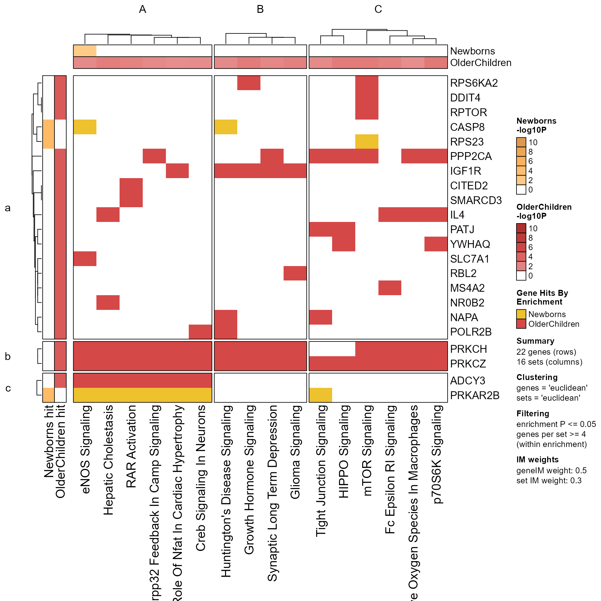
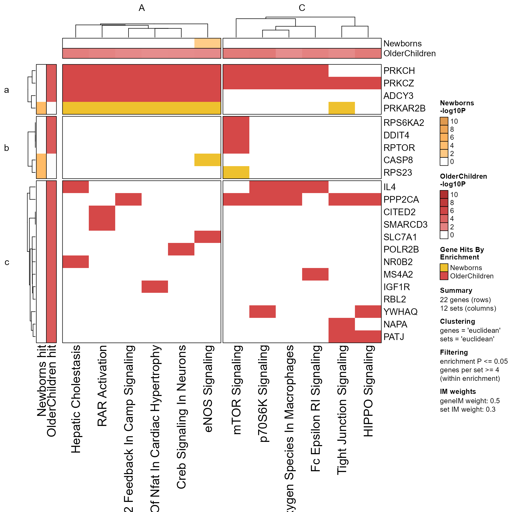
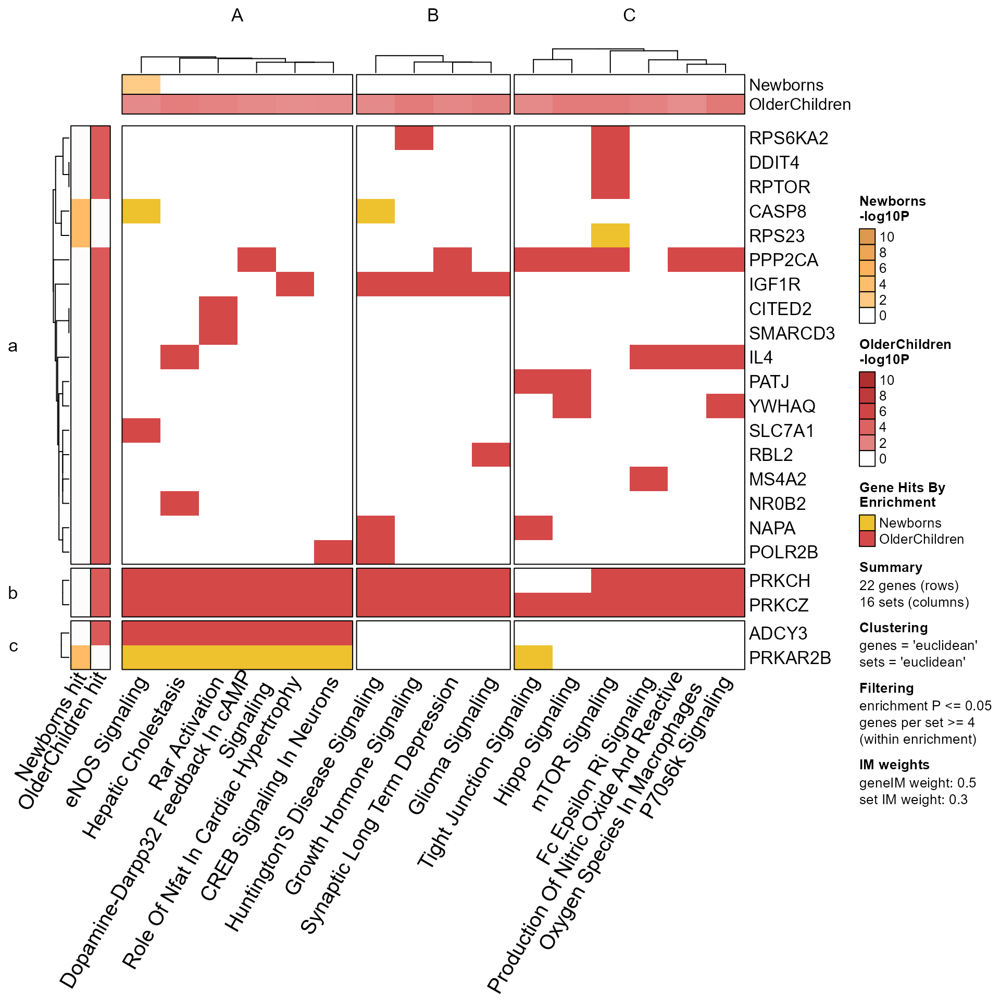
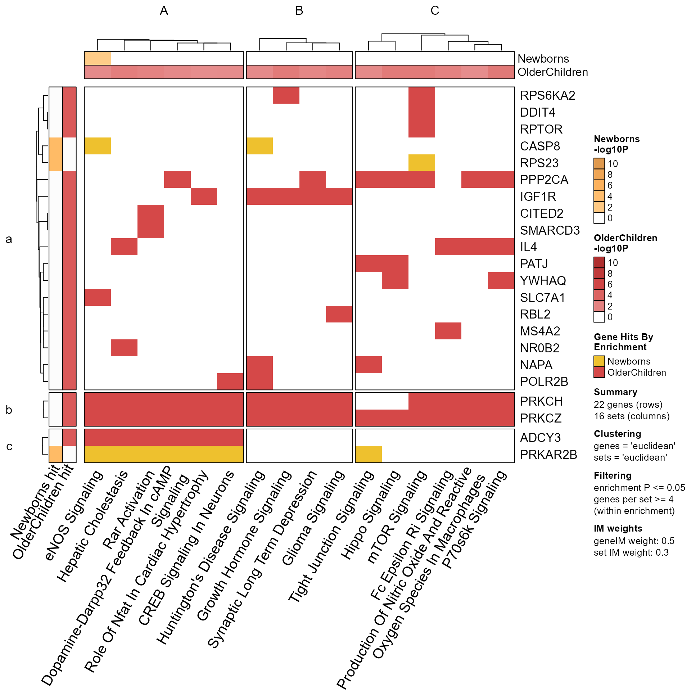

Multienrichment folio of summary plots
Usage
mem_plot_folio(
mem,
do_which = NULL,
mpf = NULL,
p_cutoff = NULL,
p_floor = 1e-10,
main = "",
use_raster = FALSE,
min_gene_ct = 1,
min_set_ct = 1,
min_set_ct_each = NULL,
column_method = "euclidean",
cluster_columns = NULL,
row_method = "euclidean",
cluster_rows = NULL,
exemplar_range = c(1, 2, 3),
pathway_column_split = NULL,
pathway_column_title = LETTERS,
gene_row_split = NULL,
gene_row_title = letters,
edge_color = NULL,
cex.main = 2,
cex.sub = 1.5,
row_cex = 1,
column_cex = 1,
max_labels = 4,
max_nchar_labels = 25,
include_cluster_title = TRUE,
repulse = 4,
use_shadowText = FALSE,
color_by_column = FALSE,
style = "dotplot_inverted",
enrich_im_weight = 0.3,
gene_im_weight = 0.5,
colorize_by_gene = TRUE,
cluster_color_min_fraction = 0.4,
byCols = c("composite_rank", "minp_rank", "gene_count_rank"),
edge_bundling = "connections",
apply_direction = NULL,
rotate_heatmap = FALSE,
row_anno_padding = grid::unit(3, "mm"),
column_anno_padding = grid::unit(3, "mm"),
returnType = c("MemPlotFolio", "list"),
do_plot = TRUE,
verbose = FALSE,
...
)
prepare_folio(..., do_plot = FALSE)Arguments
- mem
Memorlistobject frommultiEnrichMap().- do_which
integervector of plots to produce. Whendo_whichisNULL, then all plots are produced. This argument is intended to produce only a subset of plots.- mpf
MemPlotFolio, default NULL, used only to re-apply the same settings as anotherMemPlotFolio.Note:
pathway_column_splitandgene_row_splitare also taken fromthresholds(mpf), unless defined in function arguments.Note: All other values in
thresholds(mpf)are used, and not taken from corresponding function arguments.
- p_cutoff
numericvalue, default NULL is taken frommem, indicating the enrichment P-value threshold.- p_floor
numericwith the lowest enrichment P-value used in the color gradient on the Enrichment Heatmap. The purpose is to prevent very low P-values from shifting the color gradient too far from thep_cutoffcausing those colors to be pale and nearly white.- main
characterstring used as a title on Cnet plots.- use_raster
logicaldefault FALSE, deprecated, whether to use raster heatmaps, passed toComplexHeatmap::Heatmap().Note that
use_raster=TRUEmay produce visual artifacts especially with argumentcolorize_by_gene=TRUEinmem_gene_path_heatmap(). Changing this argument is no longer supported
- min_gene_ct, min_set_ct
integervalues passed tomem_gene_path_heatmap(). Themin_gene_ctrequires each set to containmin_gene_ctgenes, andmin_set_ctrequires each gene to be present in at leastmin_set_ctsets.- min_set_ct_each
integer, default NULL, minimum genes per set in at least one enrichment test.Default NULL uses
thresholds(mem)$min_countto use the same criteria.The distinction from
min_set_ctis that this threshold requires this number of genes in one enrichment, whilemin_set_ctapplies the threshold to the combined multi-enrichment data.
- column_method, row_method
characterarguments passed toComplexHeatmap::Heatmap()which indicate the distance method used to cluster columns and rows, respectively.- cluster_columns, cluster_rows
logical, default NULL, whether to cluster columns (Sets) and rows (Genes), respectively. When NULL it uses default clustering withamap::hcluster()and appliescolumn_methodorrow_method, respectively.- exemplar_range
integervector (orNULL) used to create Cnet exemplar plots, using this many exemplars per cluster.- pathway_column_split, gene_row_split
integervalue passed ascolumn_splitandrow_split, respectively, tomem_gene_path_heatmap(), indicating the number of pathway clusters, and gene clusters, to create in the gene-pathway heatmap. When either value isNULLthen auto-split logic is used.integerinput will define this number of clusterslistinput should be named by pathway cluster, in order the clusters will be split; and havecharactervectors that match pathways (sets) in the 'mem' input data.characterinput should be named by pathway (set) and have values with the name of the pathway cluster. It can befactor.
- pathway_column_title, gene_row_title
charactervectors passed tomem_gene_path_heatmap()ascolumn_titleandrow_title, respectively. When one value is supplied, it is displayed and centered across all the respective splits. When multiple values are supplied, values are used to the number of splits, and recycled as needed. In that case, repeated values are made unique byjamba::makeNames().- cex.main, cex.sub
numericvalues passed totitle()which size the default title and sub-title in Cnet plots.- row_cex, column_cex
numericcharacter expansion factor, used to adjust the relative size of row and column labels, respectively. A value of1.1will make row font size 10% larger.- color_by_column
logicalindicating whether to colorize the enrichment heatmap columns usingcolorVin the inputmem. This argument is only relevant whendo_whichinclude1.- enrich_im_weight, gene_im_weight
numericvalue between 0 and 1, passed tomem_gene_path_heatmap(), used to apply relative weight to clustering columns and rows, respectively, when combining the gene-pathway incidence matrix with either column enrichment P-values, or row gene incidence matrix data.- colorize_by_gene
logicalpassed tomem_gene_path_heatmap()indicating whether the heatmap body for the gene-pathway heatmap will be colorized using the enrichment colors for each gene.- cluster_color_min_fraction
numericvalue passed tocollapse_mem_clusters()used to determine which enrichment colors to associate with each Cnet cluster.- byCols
charactervector describing how to sort the pathways within Cnet clusters. This argument is passed torank_mem_clusters().- edge_bundling
characterstring passed tojam_igraph()to control edge bundling. The defaultedge_bundling="connections"will bundle Cnet plot edges for genes that share the same pathway connections.- apply_direction
logicalorNULLindicating whether to indicate directionality in themem_enrichment_heatmap()which is the first plot in the series. The defaultapply_direction=NULLwill auto-detect whether there is directionality present in the data, and will setapply_direction=TRUEonly when there are non-NA values that differ from zero.- rotate_heatmap
logicalpassed tomem_gene_path_heatmap()()and only this function, defaultFALSE. It indicates whether to rotate the heatmap to have gene columns and pathway rows. If you find most people tilt their head to read the pathways, it might be preferable.- row_anno_padding, column_anno_padding
grid::unitornumericwhich will be converted to "mm" units. These values control the space between the heatmap body and row/column annotations, respectively, only relevant formem_gene_path_heatmap()(). The value is only applied duringdraw()and cannot be defined in theHeatmapobject itself, which is why it is included here and notmem_gene_path_heatmap()().- do_plot
logicalindicating whether to render each plot. DefaultTRUEformem_plot_folio(), andFALSEforprepare_folio(). In either case, plot data are created and returned, butdo_plot=TRUEwill draw each plot on a unique page, suitable for use with PDF output andonefile=TRUEfor example.- verbose
logicalindicating whether to print verbose output.- ...
additional arguments are passed to downstream functions. Some useful examples:
setsis passed tomem_gene_path_heatmap()which allows one to define a specific subset of sets to use in the gene-pathway heatmap.cell_sizeis passed tomem_enrichment_heatmap()with the option to define square cell size in the heatmap dotplot. However, the resulting heatmap will be at leastncol * cell_heightwidth, andnrow * cell_size[2]height, in addition to the heights of the title and column labels, and widths of the color key and dendrogram.
Value
MemPlotFolio object using invisible(), containing each
plot object enabled by the argument do_which.
The MemPlotFolio-class data are accessible using common functions:
EnrichmentHeatmap()GenePathHeatmap()CnetCollapsed()CnetExemplar()CnetCluster()Clusters()GeneClusters()thresholds()metadata()Caption()CaptionLegendList()
Details
prepare_folio() and mem_plot_folio() both prepare data
visualizations from Mem data input.
However, prepare_folio() does not render figures,
while mem_plot_folio() does render each resulting figure.
Multiple figures can be added to a single PDF file
using pdf(file, onefile=TRUE) or cairo_pdf(filename, onefile=TRUE).
The data are returned as MemPlotFolio-class which can be used to
create figures.
Pathways are clustered using the gene-pathway incidence matrix,
then used to define pathway clusters.
This step can be customized by supplying pathway_column_split
as a list of character vectors containing
pathway (set) names.
Pathway Clustering
Pathways are hierarchical clustered by default using amap::hcluster(),
with column_method="euclidean".
The resulting hclust/dendrogram is split using pathway_column_split
with an integer number of sub-clusters. The default (NULL) will
determine a default based upon the total Sets in the analysis, and
is intended to be customized by the analyst.
The data to be clustered include the memIM() matrix of Genes (rows)
and Sets (columns), itself an incidence matrix. It could therefore
be clustered using column_method="binary". However, the default
behavior is to append -log10() values from the enrichIM matrix,
in order to cluster both the incidence matrix, and the enrichment
P-values together. The matrix data are weighted relative to one another
using enrich_im_weight=0.3. Note that the enrichment P-value matrix
applies the p_cutoff such that values that do not meet the threshold
are considered '1' and become '0' with -log10() transformation.
In order to cluster the gene-pathway incidence matrix with no
influence of the enrichment P-value matrix, use enrich_im_weight=0.
In this case it often works well to use column_method="binary".
Caveat: Clustering is itself "imperfect": The results are not definitive, and there is generally no one "true" answer. However, the output is mainly intended to help organize information already present in the data, and not to declare ground truth. As such, the results are considered stable for the methods and parameters used, and the interpretation is performed in that context.
The clustering methods and parameters are included in the legend
alongside the GenePathHeatmap() and the EnrichmentHeatmap()
for clarity.
Our experience is that clusters do not need to be perfect to be useful, informative, and valid.
Custom Cluster Function
It is also possible to supply a custom function to perform clustering,
by using argument cluster_columns which is passed via '...'
to the underlying function mem_gene_path_heatmap(). This function
should take a matrix of numeric values as input, and return
either hclust or dendrogram output, suitable for use with cutree().
An interesting custom function is cluster::daisy(x, method='gower')
whose output can be converted to hclust. The 'gower' method accepts
mixed input types such as ordinal, numeric, signed, or other values.
When supplying a custom function via cluster_columns, we recommend
defining a label using argument column_method, for example
custom_method='gower'. This label will appear in the legend of
the resulting visualizations.
The default amap::hcluster() was chosen because it is fast, includes
both the dist() and hclust() steps in one function, and
includes novel distance metrics such as method='correlation'
which have proven useful in other contexts.
Pathway Grouping
Pathways can be grouped manually by defining pathway_column_split
as a list of character vectors, where those vectors match
pathway names returned by sets(Mem) - which are also colnames
of the memIM() incidence matrix.
This step may also use a subset of sets, for example including only
pathways of relevance to the downstream analysis.
Gene Clustering
Genes in the Gene-Pathway Heatmap are clustered using similar logic as described for Pathways. Note that gene clusters are not used directly in other analysis steps (yet).
However, score_gene_path_clusters() offers some metric to identify
"hot spots" where a majority of genes in a gene cluster are
represented in the majority of pathways in a pathway cluster.
These "hot spots" are subject to further study, as potential
hubs for interpreting core components across similar biological
pathways.
Custom gene groups can be supplied with gene_row_split as
a list of character vectors whose values match genes(Mem).
Enrichment Heatmap
The Gene-Pathway Heatmap is used to define the pathway clusters (or pathway groups), and therefore the order of pathways shown in the Gene-Pathway Heatmap.
The same pathway order is used with the Enrichment Heatmap, for consistency.
An important point is that the Enrichment Heatmap does not cluster nor order pathways using enrichment P-values, and instead re-uses the dendrogram (if relevant) from the Gene-Pathway Heatmap.
Enrichment P-values are not specific to the genes contained in each pathway, and therefore clustering by enrichment P-value can be misleading by grouping pathways together which are not related by the underlying biological data.
Cnet Collapsed Plot
The pathways in each pathway cluster (or pathway group) are collapsed into one virtual pathway, then used to create a Concept network (Cnet) plot. This Cnet plot is intended to balance the motivation to show complete pathway enrichment data, with the motivation to reduce redundant information.
The pathway clusters (or pathway groups) are the key components
of the Cnet Collapsed output. Therefore adjusting the clustering
options enrich_im_weight or column_method are the most common
ways to influence and optimize the outcome.
Cnet Exemplar Plot
There are two general paradigms for Concept networks (Cnets).
Pathways in clusters:
CnetCollapsed()Exemplar Pathways per cluster:
CnetExemplar()
The Cnet Exemplar plot includes one pathway for each pathway cluster
num=1 but may include two num=2 or three num=3 pathways
per cluster if relevant. The exemplar pathway is intended as a
representative of the cluster, which can help simplify the number
of genes displayed, while also focusing the meaning of those genes
to the pathway shown.
This option may be preferred when pathway clusters are not visibly distinctive, for example when one pathway cluster does not appear to have a common set of genes shared with other pathways in the same cluster.
The alternative occurs when pathways in each cluster do share
many of the same genes, and in this case the CnetCollapsed()
plot may be more effective.
Finally, a custom Cnet exemplar plot may be warranted when displaying a few pathways with particular relevance to a research study or experiment. The steps are described in the README.Rmd and README html page for the multienrichjam package: https://jmw86069.github.io/multienrichjam
Cnet Cluster Plot
The last set of Concept network (Cnet) plots include all pathways in each individual pathway cluster. These plots are useful for pathway clusters which may have different functional sub-components, or when pathways in a cluster do not appear to be very cohesive.
The Cnet Cluster plot helps display the relationship of pathways within one pathway cluster, which may help provide the basis for interpreting the results.
Order of Plots
When using mem_plot_folio() plots are produced in a specific order.
The argument do_which may also be useful to focus the output
only on a particular plot, thereby skipping the preparatory
steps used for other plot types.
Enrichment Heatmap (Plot #1),
EnrichmentHeatmap(). Detailed arguments are described inmem_enrichment_heatmap().Gene-Pathway Heatmap (Plot #2)
GenePathHeatmap(). Detailed arguments are described inmem_gene_path_heatmap().Cnet Cluster Plot (Plots #3,#4,#5)
CnetCollapsed(). Detailed arguments are described incollapse_mem_clusters()andmem2cnet().For
mem_plot_folio()three styles are produced, with different node labeling strategies.Plot #3 uses pathway cluster titles.
Plot #4 uses pathway names.
Plot #5 uses pathway names, and hides gene labels.
Cnet Exemplar Plots (Plots #6,#7,#8)
CnetExemplar(). The number of exemplars usesexemplar_range=c(1, 2, 3).Cnet Cluster Plots (Plots #9,#10,#11,etc.)
CnetCluster(). Detailed arguments are described inmem2cnet().
Final Points
To define your own pathway cluster labels, define pathway_column_title
as a vector with length equal to pathway_column_split. These labels
become network node labels in subsequent plots, and in the
resulting igraph object.
Metadata are stored in metadata(Mpf) for MemPlotFolio output, and
includes:
'colorV': the color vector used
'hasDirection': whether the input data contained directionality, defined by any negative value in 'geneIMdirection', 'enrichIMdirection', or any non-blank column for headers(Mem) 'directionColname'.
See also
Other multienrichjam core functions:
jam_igraph(),
multiEnrichMap()
Examples
data(Memtest)
Mpf <- prepare_folio(Memtest)
GenePathHeatmap(Mpf)

# take a subset of clusters and re-Mpf
MpfSub <- prepare_folio(Memtest,
pathway_column_split=Clusters(Mpf)[c("A", "C")])
GenePathHeatmap(MpfSub)

# adjust set names
Memtest2 <- fixSetLabels(Memtest)
Mpf2 <- prepare_folio(Memtest2,
row_names_rot=0,
column_names_rot=60)
GenePathHeatmap(Mpf2)

# Now add a temporary buffer for the heatmap dimnames
with_ht_opts(list(DIMNAME_PADDING=grid::unit(c(2), "mm")), {
GenePathHeatmap(Mpf2)
})
